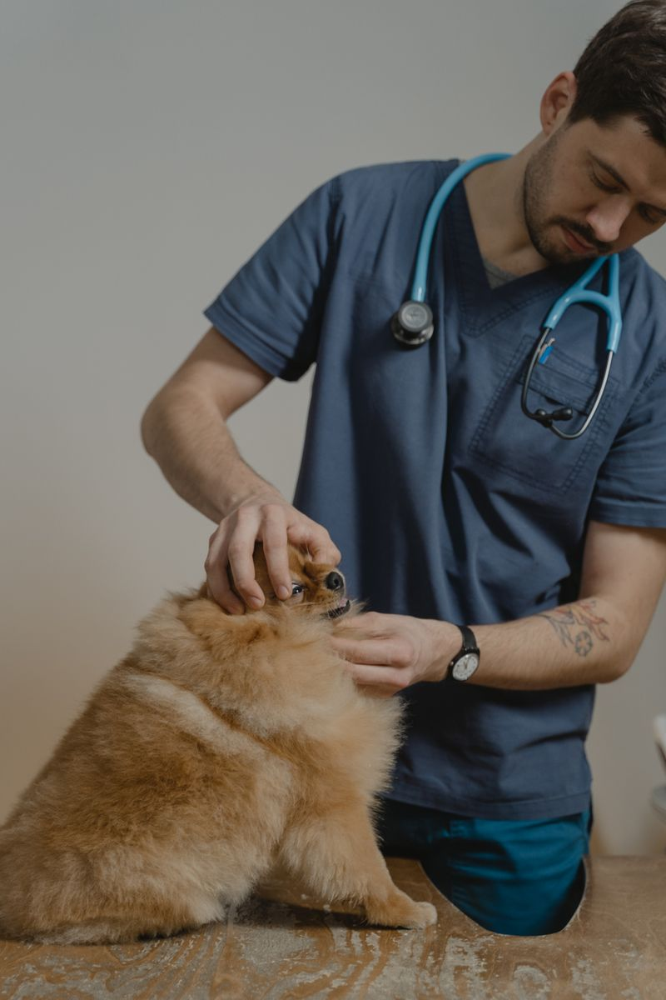
Consulta general
Revisión completa de salud con orientación y plan de bienestar para cada etapa de tu mascota.
Consultas, vacunación, cirugías, urgencias 24/7 y grooming, todo en un solo lugar. Aquí tu perro y tu gato reciben medicina de verdad y mimos sin límite.
+12,000 mascotas felices nos visitan cada año
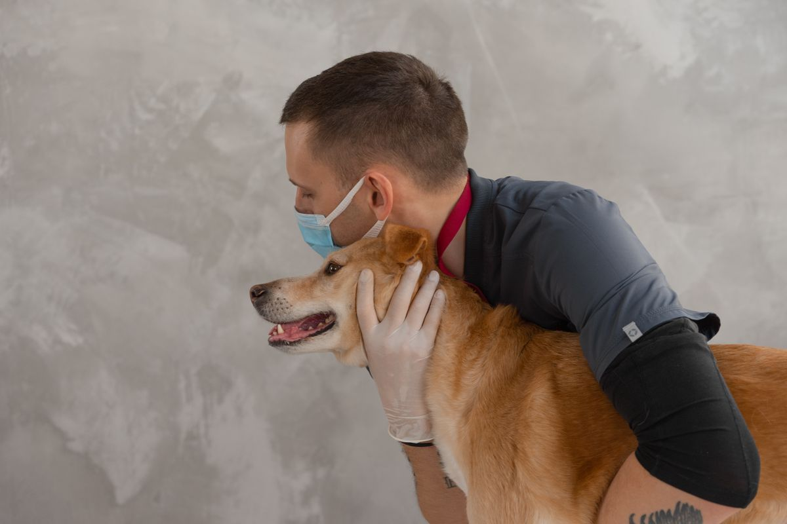
Urgencias 24/7 15+ años cuidando mascotasDe la vacuna de rutina a la cirugía más delicada, nuestro equipo acompaña a tu compañero en cada etapa de su vida.

Revisión completa de salud con orientación y plan de bienestar para cada etapa de tu mascota.
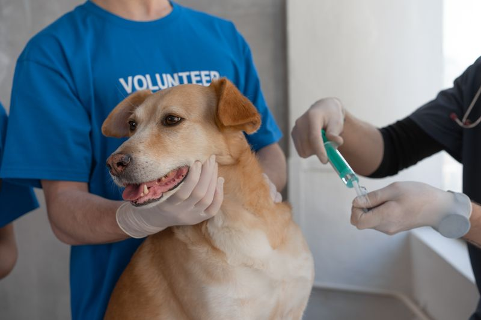
Plan de vacunación completo para perros y gatos con esquemas personalizados y recordatorios.
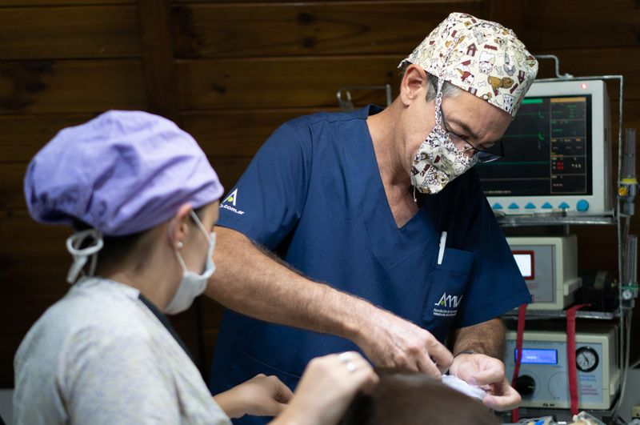
Quirófano equipado y anestesia segura para cirugías de tejidos, traumatología y emergencias.
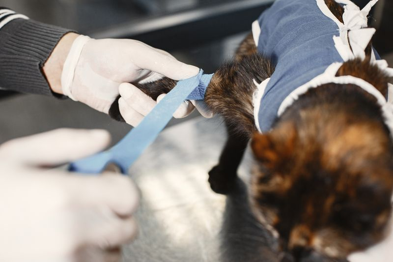
Cirugías de esterilización seguras y con anestesia vigilada para una recuperación rápida.
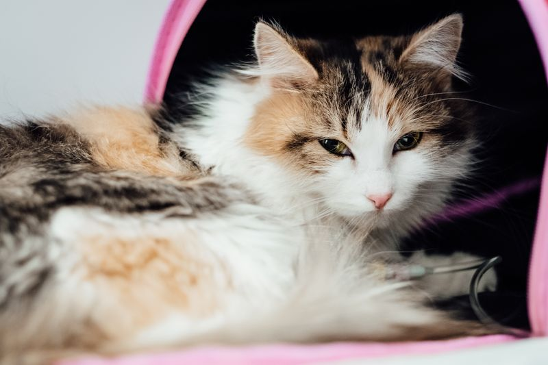
Atención inmediata todos los días del año para intoxicaciones, atropellos y urgencias.
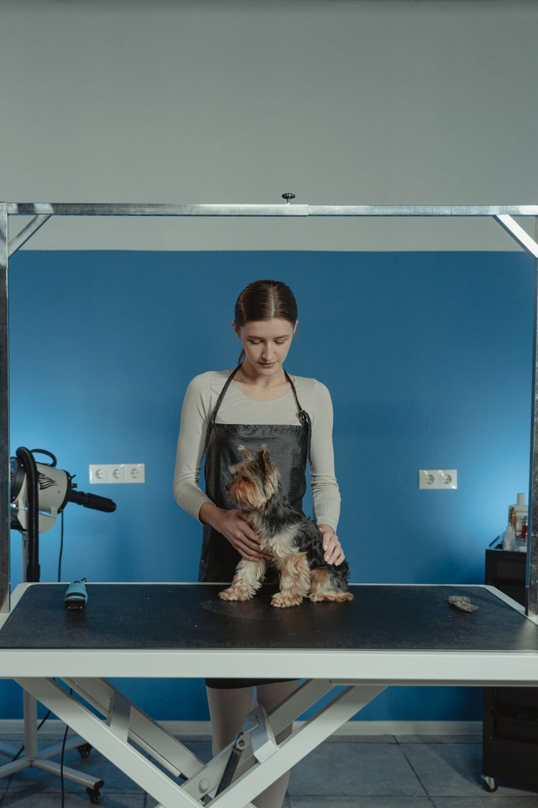
Baño, corte, deslanado y spa con productos suaves y mimos en cada sesión.
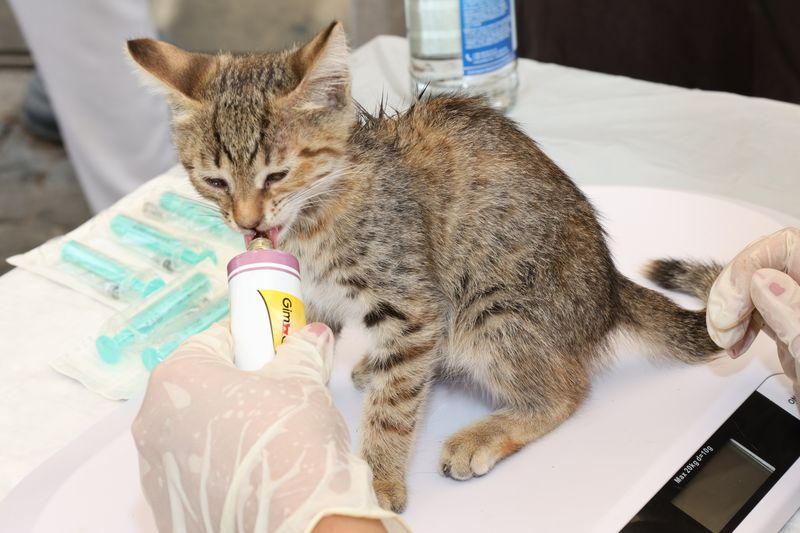
Salas de internamiento cómodas y supervisión continua durante la recuperación.
Análisis de sangre, ecografías y rayos X con resultados rápidos y precisos.
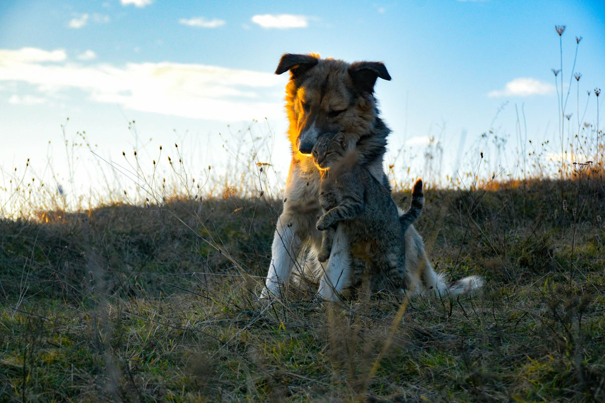
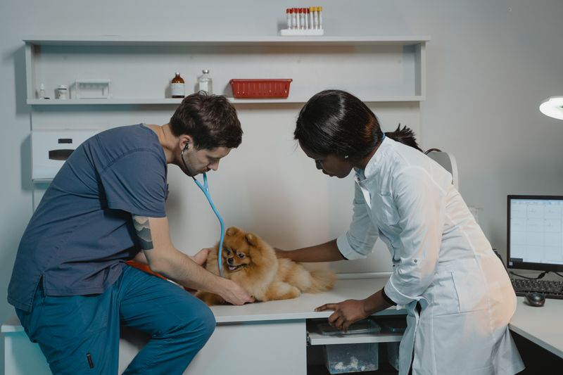
Sabemos lo difícil que es dejar a un familiar en manos ajenas. Por eso cuidamos a tu mascota como si fuera nuestra.
Un equipo humano que combina experiencia, tecnología y mucho corazón por cada animalito que cruza nuestras puertas.
Fundadora de Amigo Fiel, especialista en medicina interna felina.
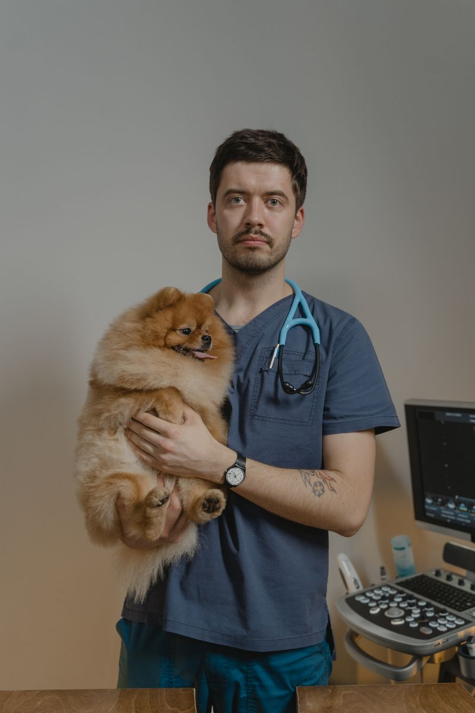
Más de 12 años realizando cirugías con anestesia segura.
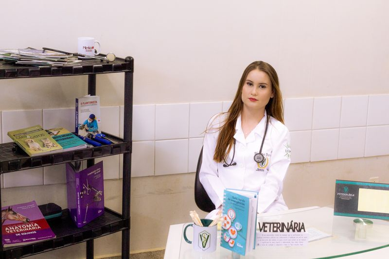
Diagnóstico clínico y manejo de enfermedades crónicas.
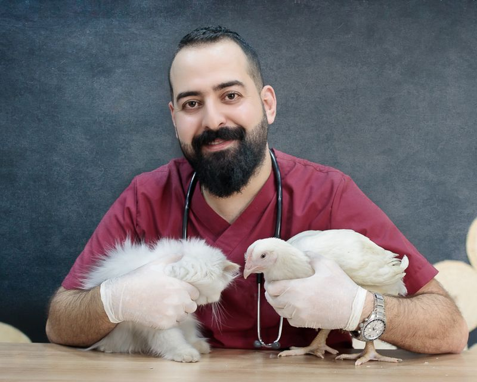
Coordinador del servicio de emergencias 24/7.
Lo que nuestros vecinos y sus mascotas cuentan de la experiencia Amigo Fiel.
★★★★★"Nuestra perrita Lola tuvo una emergencia un domingo por la noche y el equipo la atendió como si fuera suya. Llegamos nerviosos y nos fuimos tranquilos. ¡Gracias por salvarla!"
★★★★★"Llevo a Mochi al grooming cada mes y siempre sale radiante y feliz. El trato es tan cálido que hasta espera ansioso su turno. Se nota que aman su trabajo."
★★★★★"Las vacunas y chequeos de Toby son rápidos y sin estrés. Explican todo con paciencia y nunca sentimos que te cobran de más. Total confianza."
Estamos en una zona de fácil acceso, con estacionamiento para que vengas sin estrés.